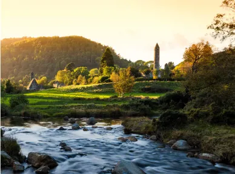
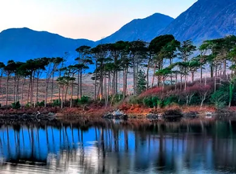
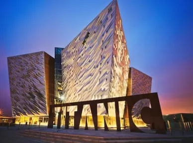
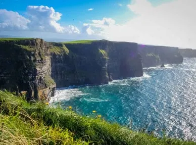
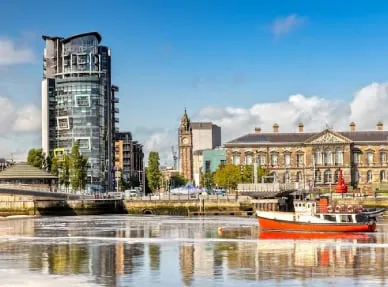
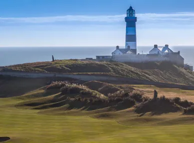
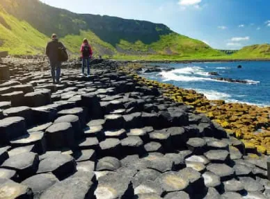
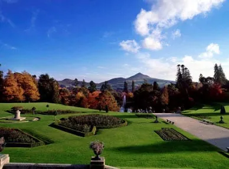
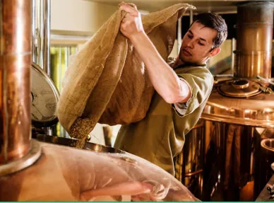
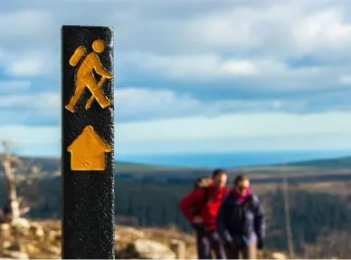

D'Incroyables Circuits Groupes
avec le DMC de l'Irlande
Demandez notre brochure Circuits Groupes
Tous les circuits de Joe O'Reilly Ireland DMC sont imprégnés de la culture irlandaise.
Nous veillons à ce que vos clients bénéficient du meilleur de ce que l'Irlande a à offrir.
Voir notre circuit le plus populaire
Planifiez un circuit sur mesure
Notre circuit groupe le plus populaire
The Best of Ireland
Notre Best Seller de 8 jours
Vos clients parcourrons le meilleur des paysages irlandais, visiterons les
sites les plus emblématiques et bénéficieront d'un accès exclusif à des
expériences irlandaises uniques et authentiques.
Profitez d'une soirée Pub avec dîner, danses et musiques Irlandaises
Découvrez le Wild Atlantic Way
City Breaks

Profitez d'un Shot de Whiskey à Votre Arrivée.
Explorez les Ruines du Site de Glendalough.
Profitez d'une soirée Pub avec dîner, danses et musiques Irlandaises
Circuits Groupes de 4 à 7 jours

Profitez d'une soirée Pub avec dîner, danses et musiques Irlandaises.
Visitez à pied les villes de Dublin & Galway
Explorez les splendeurs du Connemara

Visitez le Musée du Titanic.
Explorez la Chaussée des Géants.
Voyagez à travers les Vallées d'Antrim.

Profitez d'un shot de whiskey à votre arrivée.
Découvrez la beauté naturelle du Connemara.
Visitez les Ruines du Site de Glendalough.

Profitez d'un shot de whiskey à votre arrivée.
4 Petits Déjeuners Irlandais.
Tour Panoramique de Dublin et Belfast.

Accueil surprise par un joueur de cornemuse à l'arrivée.
Profitez d'un shot de whiskey à votre arrivée.
Assistez à une soirée Courses de Lévriers à Dublin.
Circuits Groupes de 8 à 10 Jours

Explorez la Chaussée des Géants.
Explorez les splendeurs du Connemara.
Découvrez les impresionnantes falaises de Moher.

Découvrez le Château de Bunratty.
Visitez le Château de Birr & ses Jardins.
Profitez d'une soirée-diner spectacle Irlandais.

Profitez d'un shot de whiskey à votre arrivée.
Profitez des dégustations de bières et de Whiskey Irlandais.
Découvrez la Gastronomie Irlandaise.

Parcourez des Itinéraires Originaux de Randonnée.
Explorez des Chemins Uniques avec des Paysages Magnifiques.
Accessible pour tous les Niveaux de Randonnées.
Planifions ensemble votre prochaine voyage de groupe
Nous Contacter
Pour M.I.C.E, Rugby, F.I.T de Luxe, Équitation et Intérêts Spécifiques
Appel: +353 181 20 200
Email: mice@jorireland.com
Pour les circuits de groupe,
Golf, et A.R.T.I
Appel: +353 214 385 700
Email: sales@jorireland.com
Maude Breteau, Directrice Commerciale,
Marchés francophones
Appel: +336 3202 1000
Email: mbreteau@jorireland.com
Sean Reilly, directeur des ventes,
Amérique du Nord
Appel: +1 913 706 0784
Email: sreilly@jorireland.com
Block A,
Santry Business Park,
Airport Road,
Dublin 9, D09 P5F8
River House,
Blackpool Retail Park,
Cork, T23R5TF